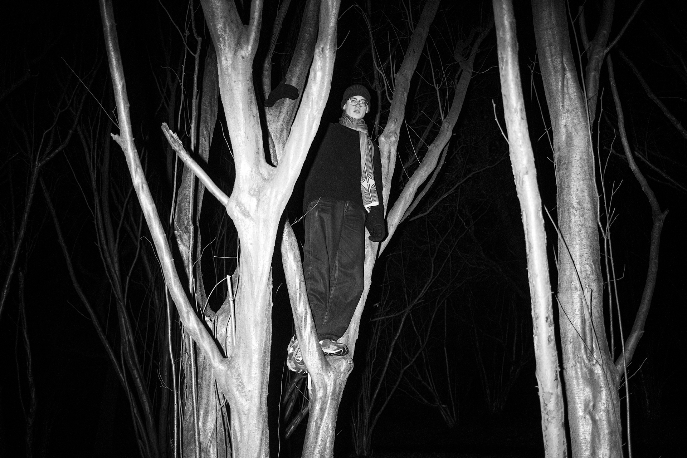

about
born 2007 in zürich, switzerland
lives in ghent, belgium

©Kari Jans
CV
PUBLICATIONS
2025
(upcoming) participation in UNEX (Unintended Expressions), a project from Mentormentor and Topo Copy
(upcoming) 02 color, zine published by Bruno Devos, HOPPER&FUCHS
(upcoming) 01 black & white, zine published by Bruno Devos, HOPPER&FUCHS
ASSIGNMENTS AND FEATURES
2025
feature of Greece 2025 on the website of SJC Visitatie Ghent, Belgium
photos before and during the dress rehearsal of De Vrouwen Van ... Troje at SJC Visitatie Ghent, Belgium
photos for the poster and advertisement from the performance De Vrouwen Van ... Troje at SJC Visitatie Ghent, Belgium, website, Instagram, Facebook
portraits and group photos made for the yearbook of the 6th grade at SJC Visitatie Ghent, Belgium
photos of the fundraising quiz for the 100 dagen at SJC Visitatie Ghent, Belgium, Instagram, Facebook
2024
feature of abdijbezinning on the website, the newsletter: SJCourant December 2024, Instagram, Facebook of SJC Visitatie Ghent, Belgium
feature in the newsletter December 2024 of the Academie voor Beeldende Kunst Ghent, Belgium
photos for the newsletter: SJCourant June 2024 about reading at SJC Visitatie Ghent, Belgium, Instagram
photos used in the yearbook of the 6th grade at SJC Visitatie Ghent, Belgium
photos before and during the talent show for Broederlijk delen at SJC Visitatie Ghent, Belgium
photos of the 100 dagen show at SJC Visitatie Ghent, Belgium
photos of the 100 dagen at SJC Visitatie Ghent, Belgium, Instagram (photos 6-10)
2023
photos and video of the Christmas celebration and the award ceremony of Piet Apolprijs at SJC Visitatie Ghent, Belgium, Instagram
photos of the visit of Sinterklaas at SJC Visitatie Ghent, Belgium, Instagram, Facebook
photos before, during, and after the show M.A.A.N at SJC Visitatie Ghent, Belgium
photos used on the poster and banner of M.A.A.N at SJC Visitatie Ghent, Belgium, Instagram, Facebook
INTERVIEWS
2025
online podcast with Kaat Celis, founder of De Donkere Kamer, about my 2 upcoming publications
AWARDS
2025
nominated for Kortgeknipt 2025 with the stop motion film Jévgǝηι IƨpRιvič at the Kortgeknipt short film festival in Sint-Niklaas, Belgium
2024
winner of the DDK #32 Pitch with the project heimat at the Minardschouwburg in Ghent, Belgium
2023
nominated for Kortgeknipt 2023 with the stop motion film E.T. the remake at the Kortgeknipt open air short film festival in Sint-Niklaas, Belgium
winner of the JEF makers maxi award 2023 with the stop motion film E.T. the remake at the JEF jeugdfilm festival in Antwerp, Belgium